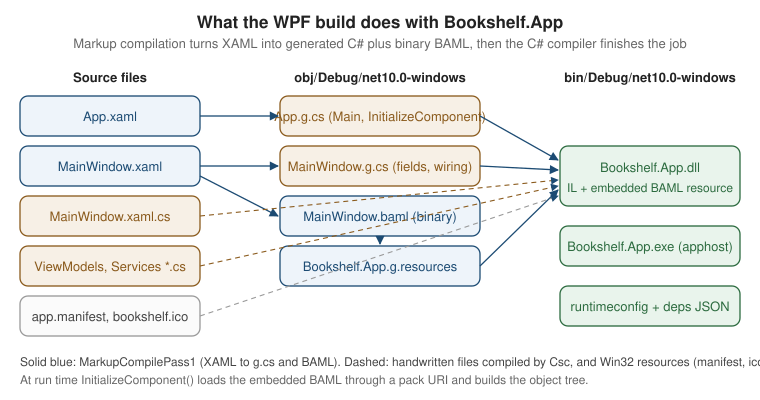

Project Structure & Build
|
This content was generated with the assistance of AI and should be verified against the official documentation before being relied on in production. |
A Windows desktop application is, to the build system, just a .NET project with a few extra switches. Those switches decide which UI framework’s reference assemblies and MSBuild targets are imported, which Windows APIs the compiler lets you call, how XAML becomes code, and which Win32 resources (manifest, icon) end up in the executable. This page walks through that layer for the running scenario, Bookshelf Desktop, on the section’s baseline:
-
.NET 10 LTS (latest patch 10.0.13, supported until 2028-11-14) and C# 14. .NET 11 is at release candidate 2 (RC2) with general availability expected at .NET Conf, 10-13 November 2026; nothing on this page changes for it except the moniker (
net11.0-windows). .NET 8 and .NET 9 leave support on 2026-11-10. -
Visual Studio 2026 (18.11.1 at the time of writing) or the .NET SDK on its own: every command below works in a terminal, and the project files are identical whichever tool created them.
-
Windows App SDK 2.5.1 for the WinUI 3 project, and CommunityToolkit.Mvvm 8.4.2 in the shared library.
-
Windows 10 and Windows 11 as run-time targets. The project files below set the minimum OS version explicitly, so the compiler can warn when code calls an API that an older supported Windows version lacks.
The page covers what is in the projects and how they are built. Choosing between WPF, WinUI 3 and Windows Forms is the subject of the platforms page (Windows App Platforms: WPF, WinUI 3, WinForms, MAUI & More), installing the tools belongs to the Development Environment & Tooling page, and publishing the result is covered in the publishing pages of this section. For the general C# toolchain, see Build and Tooling and Namespaces, Assemblies and Projects in the C# reference; this page does not repeat them.
The SDK-Style Project Is the Build Definition
Every .NET desktop project is an SDK-style project: a short XML file whose root names an SDK
(Microsoft.NET.Sdk), with source files, XAML pages and resources discovered by globbing rather than listed one by
one. The desktop UI frameworks do not need a different SDK for .NET 5 and later. A single property switches on the
desktop-specific targets and references.
| Property | Meaning | Typical value |
|---|---|---|
|
The target framework moniker (TFM): the .NET version and, for Windows-only code, the operating-system platform. |
|
|
What kind of executable the compiler produces. |
|
|
Imports the WPF reference assemblies and the XAML markup-compilation targets. |
|
|
Imports the Windows Forms reference assemblies and the designer-related targets. |
|
|
Imports the WinUI 3 XAML compiler targets. Used together with the |
|
|
Enables nullable reference type analysis (C# 8 and later). |
|
|
Adds global |
|
|
Path to the |
|
|
Path to an |
|
|
The lowest Windows version the code is declared to run on. Drives platform-compatibility analyzer warnings. |
|
|
The Windows platform(s) the app is built for. Single value for one build, plural for multi-platform projects. |
|
|
Generates the native |
|
Target Framework Monikers for Windows
A TFM has the shape net<version>-<os><os-version>. The part after the dash is the target platform. It is what
lets one compiler enforce "this API exists only on Windows" and "this API needs Windows 10 build 19041".
| Moniker | Meaning | Used by |
|---|---|---|
|
Cross-platform .NET 10, no operating-system APIs. Can run anywhere .NET 10 runs. |
|
|
.NET 10 plus the Windows-only libraries: WPF, Windows Forms, the registry, and so on. Equivalent to
|
WPF and WinForms apps, and libraries that touch them |
|
As above, plus the Windows SDK projection for the Windows 10 version 2004 (build 19041) WinRT APIs: toast
notifications, |
WinUI 3 apps; WPF or WinForms apps that call WinRT APIs |
|
The previous versions, supported until 2026-11-10. |
Apps not yet moved to .NET 10 |
|
.NET Framework. Windows-only, serviced with Windows, no new language runtime features. |
Legacy applications being migrated |
Two version numbers are easy to confuse:
-
The TFM platform version (
windows10.0.19041.0) selects which Windows SDK metadata the compiler references, that is, which WinRT APIs are visible at compile time. -
SupportedOSPlatformVersion(or, for WinUI projects,TargetPlatformMinVersion) declares the minimum version the app claims to run on. Calling an API newer than the minimum raises the platform-compatibility analyzer warning CA1416 unless the call is guarded withOperatingSystem.IsWindowsVersionAtLeast(...)or an[SupportedOSPlatform]attribute.
A plain net10.0 project cannot reference a net10.0-windows project (NuGet reports a compatibility error such as
NU1201), while the reverse works. That is why the Bookshelf solution keeps its UI-agnostic code in net10.0 libraries
and lets only the application project use the -windows moniker.
The Three UI Switches Side by Side
| Aspect | WPF | Windows Forms | WinUI 3 |
|---|---|---|---|
Switch |
|
|
|
Typical TFM |
|
|
|
|
|
|
|
UI markup |
XAML compiled to BAML |
Designer C# ( |
XAML compiled to XBF |
Generated code |
|
None for the form; |
|
Platform list |
Any CPU by default |
Any CPU by default |
|
Packaging default |
Unpackaged |
Unpackaged |
Packaged (MSIX) or unpackaged with |
Trimming and Native AOT |
Not supported |
Not supported |
|
ClickOnce |
Supported |
Supported |
Not supported |
The last two rows matter at publish time, and the publishing pages of this section come back to them.
A WPF Project File
The Bookshelf WPF application is the composition root: it references the shared libraries, owns App.xaml and
MainWindow.xaml, and is the only project that knows which UI framework is in use.
<Project Sdk="Microsoft.NET.Sdk">
<PropertyGroup>
<OutputType>WinExe</OutputType>
<TargetFramework>net10.0-windows</TargetFramework>
<UseWPF>true</UseWPF>
<Nullable>enable</Nullable>
<ImplicitUsings>enable</ImplicitUsings>
<RootNamespace>Bookshelf.Desktop</RootNamespace>
<AssemblyName>Bookshelf</AssemblyName>
<ApplicationManifest>app.manifest</ApplicationManifest>
<ApplicationIcon>Assets\bookshelf.ico</ApplicationIcon>
<SupportedOSPlatformVersion>10.0.17763.0</SupportedOSPlatformVersion>
</PropertyGroup>
<ItemGroup>
<!-- Images and fonts that XAML refers to by pack URI are compiled into the assembly -->
<Resource Include="Assets\**\*.png" />
<Resource Include="Assets\**\*.ico" />
</ItemGroup>
<ItemGroup>
<PackageReference Include="CommunityToolkit.Mvvm" />
<PackageReference Include="Microsoft.Extensions.Hosting" />
</ItemGroup>
<ItemGroup>
<ProjectReference Include="..\Bookshelf.Core\Bookshelf.Core.csproj" />
<ProjectReference Include="..\Bookshelf.Data\Bookshelf.Data.csproj" />
</ItemGroup>
</Project>Source: Upgrade WPF apps to .NET
What each part does:
-
Sdk="Microsoft.NET.Sdk"is enough. For a project that setsUseWPF, the .NET SDK imports the Windows Desktop targets automatically; older tutorials that showMicrosoft.NET.Sdk.WindowsDesktopdescribe the .NET Core 3.x form. -
OutputTypeofWinExemarks the executable as a Windows GUI application: the process starts without a console window. The next section explains the difference fromExe. -
AssemblyNameis separate from the project file name, which is handy when the folder and the executable name should differ. -
The
PackageReferenceitems have noVersionattribute because the solution uses central package management, described below. -
XAML pages,
App.xamland C# files need noCompileorPageitems: the SDK includes them by glob. Other files are not included automatically in the assembly. Images used asResourceitems must be listed, as above, or they are not available through thepack://application:,,,/Assets/...URIs.
OutputType: WinExe, Exe and Library
| Value | Behaviour | Use in Bookshelf |
|---|---|---|
|
Marks the PE header with the Windows GUI subsystem. Launching from Explorer shows no console window. Writing with
|
|
|
Console subsystem. A console window opens (or is shared with the launching terminal). Useful temporarily for printing diagnostics from a UI app. |
Not used in the app; use |
|
A |
|
A test project does not set OutputType itself: for a .NET (not .NET Framework) target, the
Microsoft.NET.Test.Sdk package sets it to Exe and generates the entry point, and xUnit v3 and MSTest runner
projects are executables as well. A WPF test project that needs real windows has additional constraints
(a single-threaded apartment thread), which the testing page of this section covers.
A Windows Forms Project File
A Windows Forms project is the same shape with a different switch. The Application* properties are Windows Forms
specific: they configure the generated ApplicationConfiguration.Initialize() method so Program.cs no longer needs
the high DPI and visual styles calls spelled out.
<Project Sdk="Microsoft.NET.Sdk">
<PropertyGroup>
<OutputType>WinExe</OutputType>
<TargetFramework>net10.0-windows</TargetFramework>
<UseWindowsForms>true</UseWindowsForms>
<Nullable>enable</Nullable>
<ImplicitUsings>enable</ImplicitUsings>
<RootNamespace>Bookshelf.WinForms</RootNamespace>
<ApplicationManifest>app.manifest</ApplicationManifest>
<ApplicationIcon>Assets\bookshelf.ico</ApplicationIcon>
<!-- Inputs of the generated ApplicationConfiguration.Initialize() -->
<ApplicationHighDpiMode>PerMonitorV2</ApplicationHighDpiMode>
<ApplicationVisualStyles>true</ApplicationVisualStyles>
<ApplicationUseCompatibleTextRendering>false</ApplicationUseCompatibleTextRendering>
<ApplicationDefaultFont>Segoe UI, 9pt</ApplicationDefaultFont>
</PropertyGroup>
<ItemGroup>
<PackageReference Include="CommunityToolkit.Mvvm" />
</ItemGroup>
<ItemGroup>
<ProjectReference Include="..\Bookshelf.Core\Bookshelf.Core.csproj" />
<ProjectReference Include="..\Bookshelf.Data\Bookshelf.Data.csproj" />
</ItemGroup>
</Project>The matching Program.cs is short because the project file already carries the settings:
namespace Bookshelf.WinForms;
internal static class Program
{
[STAThread]
private static void Main()
{
// Generated at build time from the Application* properties in the .csproj.
ApplicationConfiguration.Initialize();
Application.Run(new MainForm());
}
}Source: Windows Forms overview
With ImplicitUsings enabled, a Windows Forms project also gets implicit using directives for
System.Windows.Forms and System.Drawing. That is convenient, and it is also the reason for a classic pitfall:
setting both UseWPF and UseWindowsForms in one project makes names such as Application, Button and
MessageBox ambiguous. Keep the two UI stacks in separate projects, or remove one of the implicit usings with a
<Using Remove="System.Windows.Forms" /> item. Hosting Windows Forms controls inside WPF is an
interoperation scenario with its own page.
A WinUI 3 Project File
A WinUI 3 project additionally references the Windows App SDK NuGet package, targets a Windows SDK version, and lists the platforms it builds for. Packaged (MSIX) is the template default; the project below shows the settings that differ when the app is run unpackaged.
<Project Sdk="Microsoft.NET.Sdk">
<PropertyGroup>
<OutputType>WinExe</OutputType>
<TargetFramework>net10.0-windows10.0.19041.0</TargetFramework>
<TargetPlatformMinVersion>10.0.17763.0</TargetPlatformMinVersion>
<RootNamespace>Bookshelf.WinUI</RootNamespace>
<ApplicationManifest>app.manifest</ApplicationManifest>
<ApplicationIcon>Assets\bookshelf.ico</ApplicationIcon>
<Platforms>x86;x64;ARM64</Platforms>
<RuntimeIdentifiers>win-x86;win-x64;win-arm64</RuntimeIdentifiers>
<UseWinUI>true</UseWinUI>
<Nullable>enable</Nullable>
<ImplicitUsings>enable</ImplicitUsings>
<!-- MSIX tooling stays on so that a packaged build is a switch away -->
<EnableMsixTooling>true</EnableMsixTooling>
<!-- None = unpackaged (no package identity); omit for a packaged app -->
<WindowsPackageType>None</WindowsPackageType>
</PropertyGroup>
<ItemGroup>
<PackageReference Include="Microsoft.WindowsAppSDK" />
<PackageReference Include="CommunityToolkit.Mvvm" />
</ItemGroup>
<ItemGroup>
<Content Include="Assets\**" />
</ItemGroup>
<ItemGroup>
<ProjectReference Include="..\Bookshelf.Core\Bookshelf.Core.csproj" />
<ProjectReference Include="..\Bookshelf.Data\Bookshelf.Data.csproj" />
</ItemGroup>
</Project>Differences from the WPF file:
-
The
Microsoft.WindowsAppSDKpackage version equals the SDK version since the 2.0 release (2.5.1 on this page’s baseline). Central package management pins it in one place. -
TargetPlatformMinVersionis the WinUI project’s name for the minimum supported Windows version; templates for the current Windows App SDK start at build 17763 (Windows 10 version 1809). -
PlatformsandRuntimeIdentifiersexist because WinUI projects build per architecture. A WPF or Windows Forms project is "Any CPU" until the publish step chooses a runtime identifier. -
Assets are
Contentitems: they are copied beside the executable (or into the package) and addressed withms-appx:///URIs, rather than compiled into the assembly as WPFResourceitems are. -
EnableMsixToolingandWindowsPackageTypeselect between the packaged and unpackaged flavours. Packaging, the manifest and signing are the subject of the MSIX pages of this section.
Where the Files Live
The templates for the three stacks produce a small, conventional set of files. The Bookshelf layout adds folders for view models and services in the libraries rather than in the app, which is what keeps the app project thin.
Bookshelf.Desktop/ (WPF)
├── Bookshelf.Desktop.csproj
├── app.manifest Win32 manifest: DPI awareness, supported OS, execution level
├── App.xaml ApplicationDefinition: application resources, startup
├── App.xaml.cs code-behind: composition root (Generic Host)
├── MainWindow.xaml Page: the main window markup
├── MainWindow.xaml.cs code-behind: InitializeComponent() and view-only logic
├── Views/ further windows, dialogs and user controls
├── Themes/ ResourceDictionary files
├── Assets/ bookshelf.ico, images (Resource)
└── Properties/ launchSettings.json (debug profiles)| File | Build action | Purpose |
|---|---|---|
|
|
Declares the |
|
|
The partial class that completes |
|
|
The window’s markup; compiled to BAML (WPF) or XBF (WinUI). |
|
|
The code-behind partial class with |
|
(via |
Embedded into the executable as a Win32 resource. |
|
|
Localized strings and images (primarily Windows Forms and WPF localization). |
|
|
Images referenced from XAML. |
The WinUI template adds Package.appxmanifest for packaged apps, a Properties/PublishProfiles folder with one
.pubxml per platform and, as the application entry point, App.xaml/App.xaml.cs plus MainWindow.xaml. A Windows
Forms project has Program.cs, MainForm.cs, MainForm.Designer.cs (generated by the designer) and
MainForm.resx instead of the XAML pair.
How XAML Becomes Code: BAML and g.cs
WPF does not interpret XAML text at run time. The build runs a markup compilation step, and the markup compiler produces two things for each XAML file:
-
a generated partial class (
MainWindow.g.cs) that declares the fields for named elements (x:Name), wires event handlers from markup attributes to the methods in your code-behind, and definesInitializeComponent(). -
a BAML file (Binary Application Markup Language), a tokenized, compact form of the same markup, embedded in the assembly as a resource.
At run time, InitializeComponent() loads the BAML resource through a pack URI and builds the object tree from it,
which is faster than parsing text. The compiler also generates the Main method (in App.g.cs) from the
ApplicationDefinition item.

The intermediate files are visible, which helps when diagnosing a build error that points at a line in a generated file:
dotnet build Bookshelf.Desktop -c Debug
Get-ChildItem Bookshelf.Desktop\obj\Debug\net10.0-windows -Filter "*.g.cs"
Get-ChildItem Bookshelf.Desktop\obj\Debug\net10.0-windows -Filter "*.baml"Source: Code-behind and XAML in WPF
| Artifact | Produced by | Role |
|---|---|---|
|
|
Generated partial class: fields for |
|
Design-time build |
Same idea for IntelliSense in the editor; not part of the final build. |
|
|
Binary form of the markup, embedded in |
|
Resource generation |
The embedded resource stream that holds every BAML file and every |
|
WinUI XAML compiler |
WinUI’s binary XAML format, the counterpart of BAML. |
|
|
A temporary project WPF may create when markup refers to types defined in the same project. |
This two-pass design explains two behaviours that surprise newcomers:
-
XAML that refers to a type in the same project (a value converter or a view model in a
local:namespace) needs the project compiled first. WPF handles it with a temporary assembly build, which makes the first build of a fresh checkout slower and can show phantom errors until the C# compiles cleanly. -
The
x:Classattribute links the XAML file to a partial class. The class name and namespace in the XAML must match the C# code-behind exactly, or the build fails with an error that the partial class does not containInitializeComponent.
Build Actions for XAML and Resource Files
| Item type | Meaning | Reachable at run time as |
|---|---|---|
|
The XAML file that defines the |
(the entry point) |
|
A XAML file compiled to BAML. |
|
|
A file embedded in the assembly’s |
|
|
A file copied to the output folder, not embedded. |
|
|
A raw .NET resource (typically |
|
|
Part of the project but unused by the build. |
(not available) |
Two properties control the default globbing: EnableDefaultPageItems and EnableDefaultApplicationDefinition, which
default to true. Set EnableDefaultApplicationDefinition to false and mark App.xaml as a Page when you need a
custom Main (for example to enforce a single instance before WPF starts); then set StartupObject to the class
that holds it.
<PropertyGroup>
<EnableDefaultApplicationDefinition>false</EnableDefaultApplicationDefinition>
<StartupObject>Bookshelf.Desktop.Program</StartupObject>
</PropertyGroup>
<ItemGroup>
<Page Include="App.xaml" SubType="Designer" />
</ItemGroup>Source: Application management overview
The XAML language itself, x:Class, namespaces and BAML are the subject of the XAML Language Fundamentals page;
only the build-time consequences matter here.
app.manifest: DPI Awareness, Supported OS and Execution Level
The application manifest is an XML document embedded in the executable. Windows reads it before the first line of managed code runs, which is why some settings can only live there.
<?xml version="1.0" encoding="utf-8"?>
<assembly manifestVersion="1.0" xmlns="urn:schemas-microsoft-com:asm.v1">
<assemblyIdentity version="1.0.0.0" name="Bookshelf.Desktop.app"/>
<trustInfo xmlns="urn:schemas-microsoft-com:asm.v2">
<security>
<requestedPrivileges xmlns="urn:schemas-microsoft-com:asm.v3">
<!-- Run as the user who started the app; never request elevation for a book list -->
<requestedExecutionLevel level="asInvoker" uiAccess="false" />
</requestedPrivileges>
</security>
</trustInfo>
<compatibility xmlns="urn:schemas-microsoft-com:compatibility.v1">
<application>
<!-- Windows 10 and Windows 11 -->
<supportedOS Id="{8e0f7a12-bfb3-4fe8-b9a5-48fd50a15a9a}"/>
</application>
</compatibility>
<application xmlns="urn:schemas-microsoft-com:asm.v3">
<windowsSettings>
<!-- Legacy value for older Windows 10 builds, ignored where PerMonitorV2 is understood -->
<dpiAware xmlns="http://schemas.microsoft.com/SMI/2005/WindowsSettings">true/PM</dpiAware>
<dpiAwareness xmlns="http://schemas.microsoft.com/SMI/2016/WindowsSettings">PerMonitorV2</dpiAwareness>
<longPathAware xmlns="http://schemas.microsoft.com/SMI/2016/WindowsSettings">true</longPathAware>
</windowsSettings>
</application>
</assembly>| Element | What it controls | Notes |
|---|---|---|
|
Whether Windows shows a UAC prompt. |
Prefer |
|
Declares which Windows versions the app was designed for. Without the Windows 10 GUID, newer Windows can apply compatibility behaviour for older versions to the process. |
The same GUID covers Windows 10 and Windows 11. |
|
The DPI awareness mode: |
Per-monitor V2 handles monitors with different scale factors and scale non-client areas. |
|
Allows paths longer than 260 characters in Win32 APIs that honour it. |
.NET honours it for file APIs on current Windows. |
DPI awareness is where the three stacks differ:
-
WPF renders in device-independent units and supports per-monitor DPI awareness, but the process must opt in. Add the manifest settings above so the whole process, including native dialogs and interop windows, runs in
PerMonitorV2mode. -
Windows Forms has the
ApplicationHighDpiModeMSBuild property (it feedsApplicationConfiguration.Initialize()) andApplication.SetHighDpiMode(...)as the code equivalent. A manifestdpiAwarenessentry is the alternative; choose one place, because the process mode is set once. -
WinUI 3 apps run per-monitor DPI aware, and the project template’s
app.manifestdeclaresPerMonitorV2explicitly; keep that entry when you edit the file.
The Visual Studio template creates an app.manifest with commented examples when you choose Add > New Item >
Application Manifest File; the file above is the trimmed version with only the entries that matter.
ApplicationIcon and Assembly Metadata
ApplicationIcon embeds an .ico file as the Win32 icon of the executable. That is the icon shown in Explorer, on
the taskbar before the window appears, and in the Open with list. It is a different thing from the window icon:
| Icon | How it is set | Where it appears |
|---|---|---|
Executable icon |
|
Explorer, shortcuts, taskbar pin |
WPF window icon |
|
Title bar, Alt+Tab |
Windows Forms form icon |
|
Title bar, Alt+Tab |
WinUI window icon |
|
Title bar, taskbar |
Packaged tile and logo images |
|
Start menu, Store, installer |
Use a multi-resolution .ico file (16, 24, 32, 48 and 256 pixels as a minimum) so the shell never has to scale a
single bitmap. Assembly metadata that appears in the file’s Properties dialog also comes from the project file:
<PropertyGroup>
<Product>Bookshelf Desktop</Product>
<Company>Example Books Ltd</Company>
<Copyright>Copyright 2026 Example Books Ltd</Copyright>
<Version>1.4.0</Version>
<FileVersion>1.4.0.0</FileVersion>
</PropertyGroup>Version feeds the assembly, file and package version in one place. Packaged apps carry a separate four-part version
in Package.appxmanifest, which the MSIX pages explain.
Directory.Build.props and Central Package Management
Three projects with the same Nullable, ImplicitUsings, analyzer and version settings should state them once.
MSBuild automatically imports a file named Directory.Build.props, searching from the project folder upwards, and
Directory.Packages.props does the same for NuGet versions. Both live at the repository root, next to the solution.
<Project>
<PropertyGroup>
<LangVersion>14</LangVersion>
<Nullable>enable</Nullable>
<ImplicitUsings>enable</ImplicitUsings>
<AnalysisLevel>latest-recommended</AnalysisLevel>
<EnforceCodeStyleInBuild>true</EnforceCodeStyleInBuild>
<Deterministic>true</Deterministic>
<UseArtifactsOutput>true</UseArtifactsOutput>
<Product>Bookshelf Desktop</Product>
<Company>Example Books Ltd</Company>
<Version>1.4.0</Version>
</PropertyGroup>
<!-- Strict only where it is cheap: the CI build, not every developer save -->
<PropertyGroup Condition="'$(GITHUB_ACTIONS)' == 'true'">
<ContinuousIntegrationBuild>true</ContinuousIntegrationBuild>
<TreatWarningsAsErrors>true</TreatWarningsAsErrors>
</PropertyGroup>
</Project>Source: Upgrade WPF apps to .NET
<Project>
<PropertyGroup>
<ManagePackageVersionsCentrally>true</ManagePackageVersionsCentrally>
</PropertyGroup>
<ItemGroup>
<PackageVersion Include="CommunityToolkit.Mvvm" Version="8.4.2" />
<PackageVersion Include="Microsoft.WindowsAppSDK" Version="2.5.1" />
<PackageVersion Include="Microsoft.Extensions.Hosting" Version="10.0.0" />
<PackageVersion Include="Microsoft.EntityFrameworkCore.Sqlite" Version="10.0.0" />
<PackageVersion Include="Microsoft.NET.Test.Sdk" Version="17.14.1" />
<PackageVersion Include="MSTest" Version="3.9.3" />
</ItemGroup>
</Project>Source: Unit testing C# with MSTest
The versions above are the ones used by the section’s other pages for the toolkit and the Windows App SDK; update the Microsoft.Extensions, EF Core and test package versions to the current stable releases when you create the solution. A third small file pins the SDK, so every developer and the CI runner build with the same compiler:
{
"sdk": {
"version": "10.0.100",
"rollForward": "latestFeature"
}
}How the three files interact:
| File | Effect | Gotcha |
|---|---|---|
|
Imported before the project body, so the project can override any value. |
Applies to every project below it, including tests. Per-stack settings ( |
|
Imported after the project body, so it can adjust or add targets. |
Not needed for Bookshelf; mentioned because analyzers and packaging often use it. |
|
Central package versions; project files then omit |
A |
|
Pins the SDK version and the roll-forward policy. |
Without it, the newest installed SDK is used, which can differ between machines. |
The C# reference covers the file mechanics in more depth; see
Build and Tooling for the MSBuild evaluation order.
No page in the verified Microsoft Learn set for this section documents Directory.Build.props itself: the desktop
documentation assumes the SDK-style project and leaves solution-wide MSBuild customization to the general MSBuild
documentation.
Solution Layout for MVVM
MVVM needs a boundary the compiler can enforce: view models and models must not reference UI types. Splitting them into a separate project makes that boundary a build error rather than a code-review comment.
| Project | Contains | TargetFramework |
Key references |
|---|---|---|---|
|
Models ( |
|
|
|
|
|
|
|
|
|
Core and Data, |
|
MSTest tests for view models, with a fake |
|
Core and Data, |
Two rules keep the graph healthy. The arrows point only toward Bookshelf.Core, which references no other project.
Bookshelf.Desktop is the only project that depends on both libraries, because it is where the abstractions
(IBookRepository, IDialogService) are bound to implementations. The WinUI and Windows Forms variants of Bookshelf
reuse the same two libraries unchanged and replace only the app project, which is how the section’s stack-comparison
pages can show the same main screen three times.
Creating the Solution from the Command Line
mkdir Bookshelf; cd Bookshelf
# Solution, then projects. Core and Data are class libraries; the app is a WPF project.
dotnet new sln --name Bookshelf
dotnet new classlib --name Bookshelf.Core --output src/Bookshelf.Core --framework net10.0
dotnet new classlib --name Bookshelf.Data --output src/Bookshelf.Data --framework net10.0
dotnet new wpf --name Bookshelf.Desktop --output src/Bookshelf.Desktop --framework net10.0
dotnet new mstest --name Bookshelf.Tests --output tests/Bookshelf.Tests --framework net10.0
# Register the projects in the solution
dotnet sln add src/Bookshelf.Core src/Bookshelf.Data src/Bookshelf.Desktop tests/Bookshelf.Tests
# Wire the dependency graph shown above
dotnet add src/Bookshelf.Data reference src/Bookshelf.Core
dotnet add src/Bookshelf.Desktop reference src/Bookshelf.Core src/Bookshelf.Data
dotnet add tests/Bookshelf.Tests reference src/Bookshelf.Core src/Bookshelf.Data
# Packages (versions come from Directory.Packages.props once it exists)
dotnet add src/Bookshelf.Core package CommunityToolkit.Mvvm
dotnet add src/Bookshelf.Data package Microsoft.EntityFrameworkCore.Sqlite
dotnet add src/Bookshelf.Desktop package Microsoft.Extensions.Hosting
dotnet build
dotnet test
dotnet run --project src/Bookshelf.DesktopSource: Upgrade WPF apps to .NET
Notes on the commands:
-
Since the .NET 10 SDK,
dotnet new slncreates the XML-based.slnxsolution format by default (Bookshelf.slnx); the older.slnis still available with--format sln. Visual Studio 2026 opens both. Thedotnet sln addcommand works with either. -
dotnet new wpfanddotnet new winformsship with the SDK. A WinUI 3 project template is installed with the Visual Studio "WinUI application development" workload (or from the Windows App SDK templates), so it is created from Visual Studio or the template package rather than assumed to exist in a bare SDK install. -
dotnet new wpf --framework net10.0produces a project targetingnet10.0-windows; the template adds the-windowssuffix because UI frameworks require it. -
When
Directory.Packages.propsis present,dotnet add packagerecords the version in that file instead of in the project.
The Library and Test Project Files
<!-- src/Bookshelf.Core/Bookshelf.Core.csproj -->
<Project Sdk="Microsoft.NET.Sdk">
<PropertyGroup>
<TargetFramework>net10.0</TargetFramework>
<RootNamespace>Bookshelf.Core</RootNamespace>
</PropertyGroup>
<ItemGroup>
<PackageReference Include="CommunityToolkit.Mvvm" />
</ItemGroup>
</Project><!-- tests/Bookshelf.Tests/Bookshelf.Tests.csproj -->
<Project Sdk="Microsoft.NET.Sdk">
<PropertyGroup>
<TargetFramework>net10.0</TargetFramework>
<IsPackable>false</IsPackable>
<IsTestProject>true</IsTestProject>
</PropertyGroup>
<ItemGroup>
<PackageReference Include="Microsoft.NET.Test.Sdk" />
<PackageReference Include="MSTest" />
</ItemGroup>
<ItemGroup>
<ProjectReference Include="..\..\src\Bookshelf.Core\Bookshelf.Core.csproj" />
<ProjectReference Include="..\..\src\Bookshelf.Data\Bookshelf.Data.csproj" />
</ItemGroup>
</Project>Source: Unit testing C# with MSTest
Because Directory.Build.props already sets Nullable, ImplicitUsings and the analysis level, the project files
contain only what is specific to each project. Core being net10.0 has a practical payoff: its tests run without
any Windows UI thread, on any CI machine that has the .NET SDK. The same domain types and abstractions are then used
unchanged by the WPF, WinUI and Windows Forms apps.
A first view model shows the intent of the split. It lives in the WPF app, in the Bookshelf.Desktop.ViewModels
namespace, but depends only on the Bookshelf.Core abstractions and the MVVM Toolkit. It uses the toolkit’s
partial-property [ObservableProperty] form (C# 14 and CommunityToolkit.Mvvm 8.4.1 or later) and no UI type at all:
using System.Collections.ObjectModel;
using Bookshelf.Core;
using CommunityToolkit.Mvvm.ComponentModel;
using CommunityToolkit.Mvvm.Input;
namespace Bookshelf.Desktop.ViewModels;
public partial class BooksViewModel(IBookRepository repository, IDialogService dialogs) : ObservableObject
{
[ObservableProperty]
public partial string SearchText { get; set; } = string.Empty;
[ObservableProperty]
public partial Book? SelectedBook { get; set; }
public ObservableCollection<Book> Books { get; } = [];
[RelayCommand]
private async Task LoadAsync(CancellationToken cancellationToken)
{
Books.Clear();
foreach (var book in await repository.GetAllAsync(cancellationToken))
{
Books.Add(book);
}
}
[RelayCommand]
private async Task DeleteSelectedAsync()
{
if (SelectedBook is { } book && await dialogs.ConfirmAsync("Delete book", $"Delete {book.Title}?"))
{
await repository.DeleteAsync(book.Id, CancellationToken.None);
Books.Remove(book);
}
}
}Source: ObservableProperty attribute
The project reference graph is the whole point: IDialogService is declared in Core and implemented in the app with
a MessageBox (WPF) or ContentDialog (WinUI), so this class uses neither and its tests need no UI thread.
The toolkit, the pattern and the services get their own pages in the MVVM part of this section.
Building and Running
Everything the IDE does maps onto a few commands:
| Command | Effect |
|---|---|
|
Resolves NuGet packages (run implicitly by |
|
Runs markup compilation and the C# compiler; output in |
|
Builds and starts the WPF or Windows Forms app. For WinUI, run from Visual Studio or use an unpackaged build. |
|
Rebuilds and applies Hot Reload where supported. |
|
Builds and runs the test project(s). |
|
Produces a framework-dependent deployment for 64-bit Windows. |
dotnet build -c Release
dotnet test -c Release --no-build
dotnet publish src/Bookshelf.Desktop -c Release -r win-x64 --self-contained false -o publish/win-x64Source: dotnet publish
Trimming (PublishTrimmed) and Native AOT are not supported for WPF and Windows Forms: the SDK disables them for
those project types (the SDK reports NETSDK1168 when a WPF project sets PublishTrimmed). Windows App SDK projects
can use PublishAot since Windows App SDK 1.6. The Windows Forms and WPF rows of the earlier table summarize this; the
publishing pages of this section give the full matrix.
From .NET Framework Projects to .NET 8, 9 and 10
Moving a .NET Framework desktop application to the SDK-style project model is mostly a project-file change.
| Area | .NET Framework (4.x) | .NET 8, 9 and 10 |
|---|---|---|
Project file |
Verbose, lists every file; |
Short SDK-style file; globbing; |
Target |
|
|
UI switch |
Implicit (WPF references added by hand) |
|
Entry point |
|
Same, plus |
Configuration |
|
|
Assembly info |
|
Properties in the project; |
DPI |
Opt-in via manifest and |
Opt-in via manifest (WPF) or |
Designer |
In-process |
Windows Forms designer is out of process |
Deployment |
Installed with Windows |
Framework-dependent or self-contained; own the runtime |
Unavailable |
Some technologies stay behind: AppDomains beyond the default, remoting, some Windows Communication Foundation client features, |
Migrating an existing project: run the .NET portability analysis, convert the project file, and fix API gaps. The
.NET Upgrade Assistant tool is deprecated; Microsoft now recommends GitHub Copilot modernization for
guided upgrades, and the migration pages document the manual route. The .NET 8, 9 and 10 releases did not change the
project structure: moving a project from net8.0-windows to net10.0-windows is, in practice, a one-line change plus
a package version bump. The differences between the releases are runtime and library features, not the layout described
here.
Pitfalls
-
Forgetting the
-windowssuffix. A project that setsUseWPFbut targets plainnet10.0fails with error NETSDK1136 (the target platform must be set to Windows). Usenet10.0-windows(or a longer moniker). -
Mixing
UseWPFandUseWindowsForms. Implicit usings makeApplicationandMessageBoxambiguous. Separate the projects or remove an implicit using. -
Referencing a
-windowsproject from a plainnet10.0project. The reference is refused with a compatibility error (NU1201). The dependency must point from the Windows project to the portable one, never the other way. -
Resources not found at run time. WPF images must be
Resourceitems for pack URIs to resolve; WinUI assets must beContentitems. A missing item type shows as a blank image, not as a build error. -
Setting DPI awareness twice. Using a manifest entry and also
Application.SetHighDpiModeorApplicationHighDpiModemakes the effective mode depend on order. Choose one place. -
Console output lost.
WinExehas no console; use logging,Debug.WriteLine, or temporarily switch toExe. -
Hard-coded NuGet versions drifting. Without central package management, three projects reference three versions of the same package. Centralize them in
Directory.Packages.props. -
Mismatched
x:Classand code-behind. A renamed namespace in C# without the XAML change breaksInitializeComponent. -
Treating
binandobjas source. They are build output; keep them (andartifacts/) in.gitignore. -
Elevation by default. A manifest with
requireAdministratorfor convenience prevents drag-and-drop from Explorer and increases the damage any bug can do. Request elevation only for the operation that needs it.
What the Official Documentation Does Not Provide
-
There is no single Microsoft Learn page for the desktop project layout across WPF, Windows Forms and WinUI 3. The information is spread over the WPF, Windows Forms and Windows App SDK documentation sets. The tables above consolidate it; where a value is a template default (such as the minimum OS version of the WinUI template), check the template in your installed tooling.
-
Directory.Build.props, central package management andglobal.jsonare general MSBuild and NuGet features. The desktop documentation does not describe a recommended solution layout for MVVM; the Core/Data/App/Tests split is a convention used by the section, not an official one. -
BAML is described in the WPF documentation as an implementation detail of XAML compilation. The intermediate file names and the two-pass behaviour above reflect how the build currently works; do not depend on them in tools.
-
Trimming and Native AOT for WPF and Windows Forms are documented only as unsupported. WinUI’s AOT support appears in the Windows App SDK release notes rather than in a dedicated desktop guide.
Third-party alternatives to the project and build tooling exist (for example the cross-platform Avalonia UI framework and the Uno Platform, which use different project templates); they are outside the scope of this page.
See Also
-
Build and Tooling — the
dotnetCLI, MSBuild andDirectory.Build.propsin the C# reference. -
Namespaces, Assemblies and Projects — assemblies, SDK-style projects and NuGet.
-
Preprocessor Directives and Compilation — conditional compilation symbols and platform conditionals.
-
Testing — xUnit, NUnit and MSTest basics.